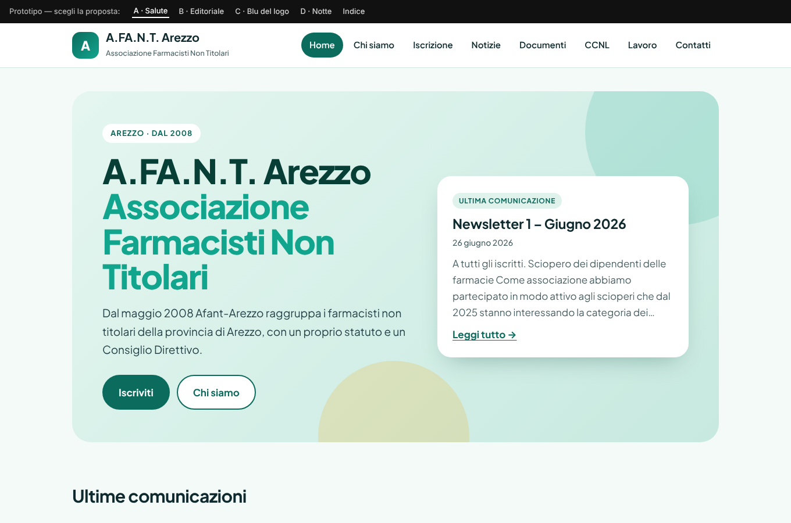
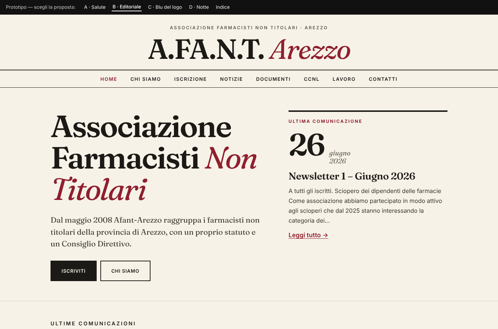
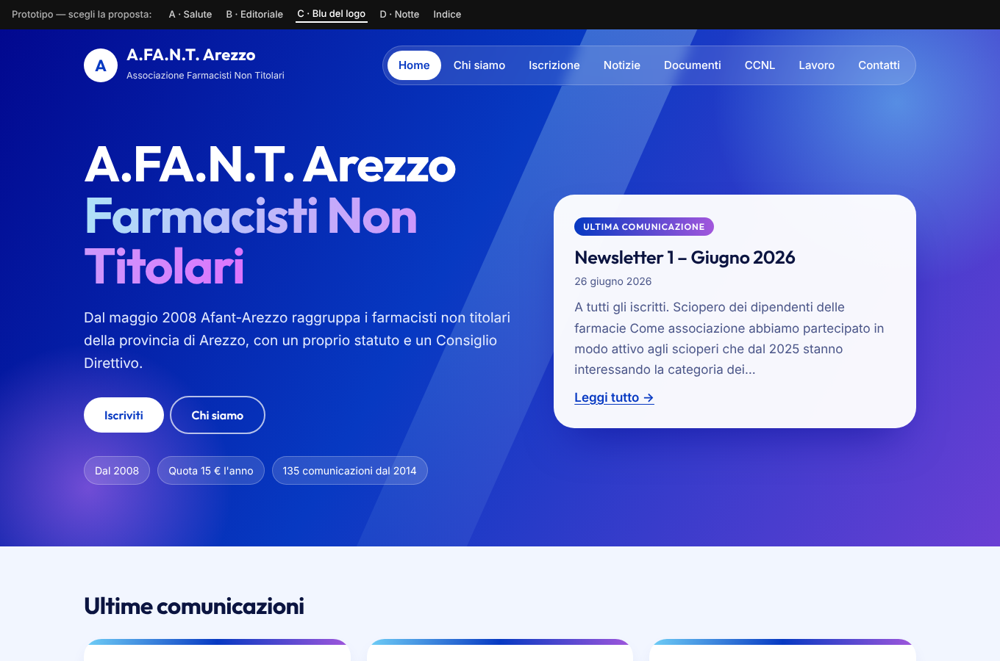
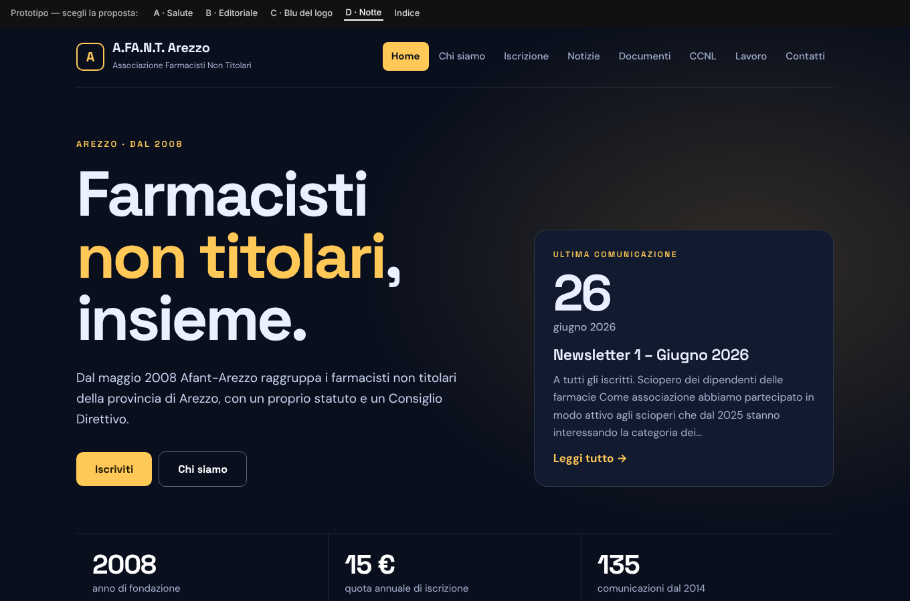
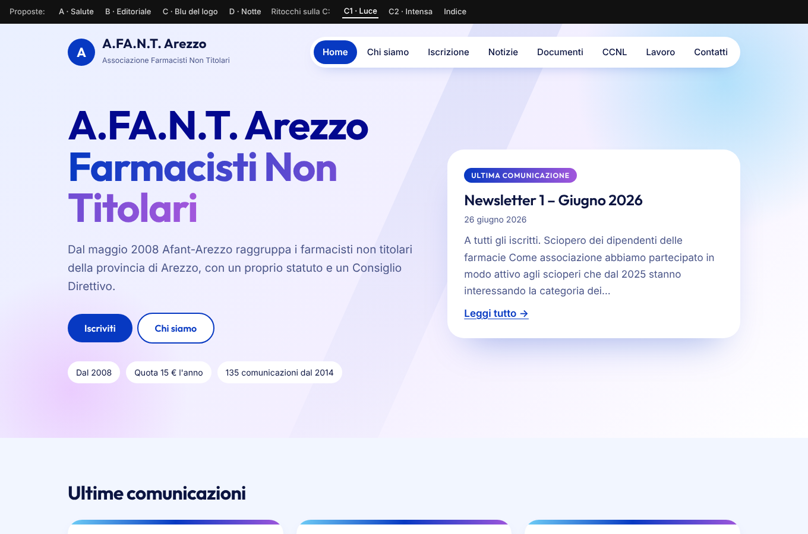
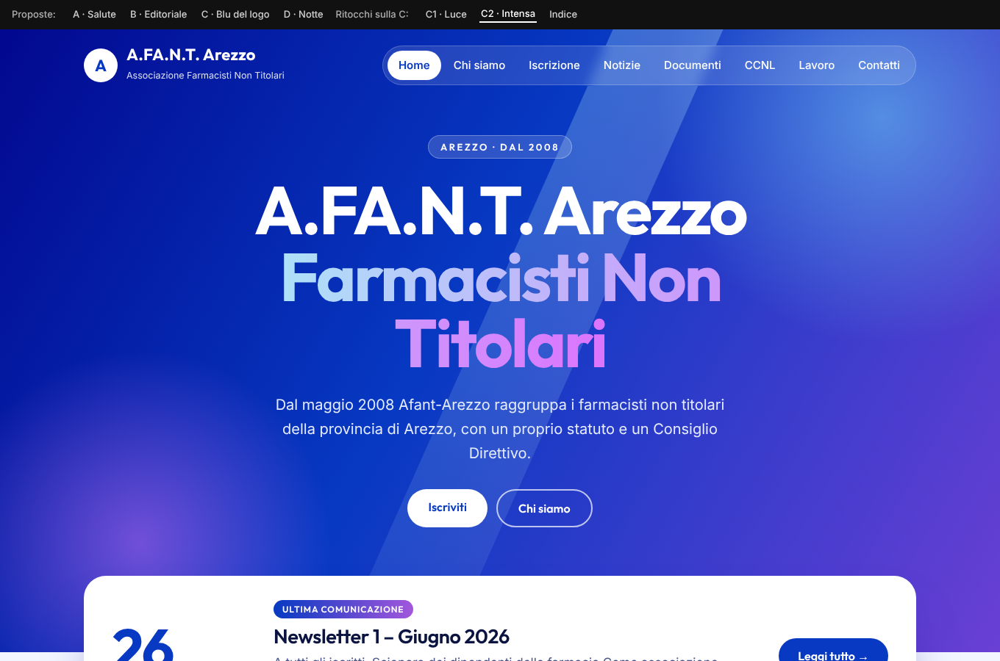

Quattro proposte (A-D) e due ritocchi sulla C scelta (C1, C2), con gli stessi testi reali del sito. Il logo è provvisorio (monogramma): va sostituito con quello dell'associazione. Clicca per aprire a tutta pagina.

A · SaluteVerde moderno, morbido e rassicurante
B · EditorialeSerif, carta e bordeaux: come una rivista di categoria
C · Blu del logoI colori della locandina: blu, ciano e viola
D · NotteScuro ad alto contrasto, con giallo
C1 · LucePiù chiara e calma: bianco, blu come accento
C2 · IntensaPiù grande e decisa: riquadro della notizia sovrapposto